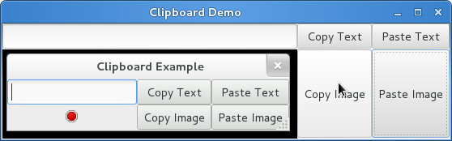

剪贴板¶
Gtk.Clipboard 为各种数据提供了一个存储区域，包括文本和图像。使用剪贴板
允许这些数据在不同的程序间通过复制、剪切、粘贴等动作共享。这些动作通常通过三种
方式完成：使用键盘快捷键、使用 Gtk.MenuItem ，将这些动作的函数与
Gtk.Button 控件连接。
对于不同的目的有多种的剪贴板，在觉到多数环境下， ClIPBOARD 用于日常的复制和
粘贴， PRIMARY 则存储光标选中的文本。
Clipboard 对象¶
-
class
Gtk.Clipboard¶ -
get(selection)¶ 根据 selection 获得相应的
Gtk.Clipboard。selection 为描述使用哪一个剪贴板的
Gdk.Atom的实例。 预定义的值：Gdk.SELECTION_CLIPBOARDGdk.SELECTION_PRIMARY
-
set_text(text, length)¶ 设置剪贴板的内容为给的的文本。
text 是要放进剪贴板的字符串。
length 是要存放的字符数。如果存储整个字符串则可以忽略。
-
set_image(image)¶ 设置剪贴板的内容为给定的图像。
image 必须为
Gdk.Pixbuf的实例。 要从Gdk.Image获取，使用image.get_pixbuf()。
-
wait_for_text()¶ 以字符串返回剪贴板的内容，如果剪贴板为空或者当前没有文本则返回
None。
-
wait_for_image()¶ 以
Gtk.Pixbuf返回接铁板的内容。 如果剪贴板内没有图像或为空则返回None。
-
store()¶ 在本程序之外保存剪贴板的内容，否则拷贝到剪贴板中的数据可能会在程序退出时会消失。
-
clear()¶ 清除剪贴板的内容。 使用请注意，可能会清除其他程序设置的内容。
-
Example¶
1 2 3 4 5 6 7 8 9 10 11 12 13 14 15 16 17 18 19 20 21 22 23 24 25 26 27 28 29 30 31 32 33 34 35 36 37 38 39 40 41 42 43 44 45 46 47 48 49 50 51 52 53 54 55 56 57 58 59 60 | from gi.repository import Gtk, Gdk
class ClipboardWindow(Gtk.Window):
def __init__(self):
Gtk.Window.__init__(self, title='Clipboard Demo')
grid = Gtk.Grid()
self.clipboard = Gtk.Clipboard.get(Gdk.SELECTION_CLIPBOARD)
self.entry = Gtk.Entry()
self.image = Gtk.Image.new_from_stock(Gtk.STOCK_STOP, Gtk.IconSize.MENU)
button_copy_text = Gtk.Button('Copy Text')
button_paste_text = Gtk.Button('Paste Text')
button_copy_image = Gtk.Button('Copy Image')
button_paste_image = Gtk.Button('Paste Image')
grid.attach(self.entry, 0, 0, 1, 1)
grid.attach_next_to(self.image, self.entry, Gtk.PositionType.BOTTOM, 1, 1)
grid.attach_next_to(button_copy_text, self.entry, Gtk.PositionType.RIGHT, 1, 1)
grid.attach_next_to(button_paste_text, button_copy_text, Gtk.PositionType.RIGHT, 1, 1)
grid.attach_next_to(button_copy_image, button_copy_text, Gtk.PositionType.BOTTOM, 1, 1)
grid.attach_next_to(button_paste_image, button_paste_text, Gtk.PositionType.BOTTOM, 1, 1)
button_copy_text.connect('clicked', self.copy_text)
button_paste_text.connect('clicked', self.paste_text)
button_copy_image.connect('clicked', self.copy_image)
button_paste_image.connect('clicked', self.paste_image)
self.add(grid)
def copy_text(self, widget):
self.clipboard.set_text(self.entry.get_text(), -1)
def paste_text(self, widget):
text = self.clipboard.wait_for_text()
if text != None:
self.entry.set_text(text)
else:
print 'No Text on the clipboard'
def copy_image(self, widget):
if self.image.get_storage_type() == Gtk.ImageType.PIXBUF:
self.clipboard.set_image(self.image.get_pixbuf())
else:
print 'No image has been pasted yet'
def paste_image(self, widget):
image = self.clipboard.wait_for_image()
if image != None:
self.image.set_from_pixbuf(image)
else:
print 'No Image on the clipboard'
win = ClipboardWindow()
win.connect('delete-event', Gtk.main_quit)
win.show_all()
Gtk.main()
|